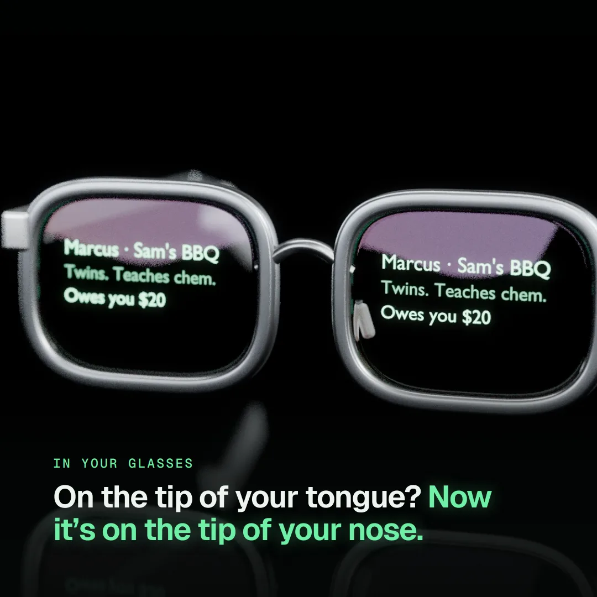
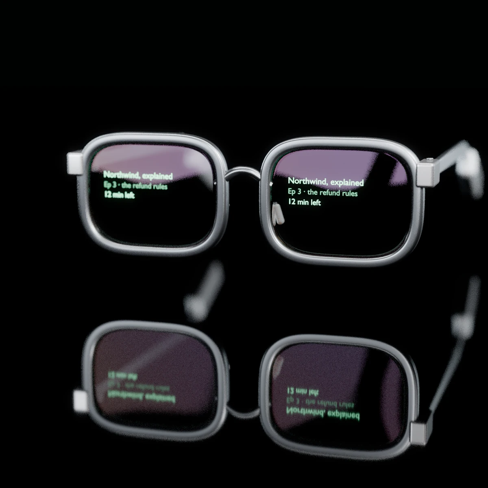
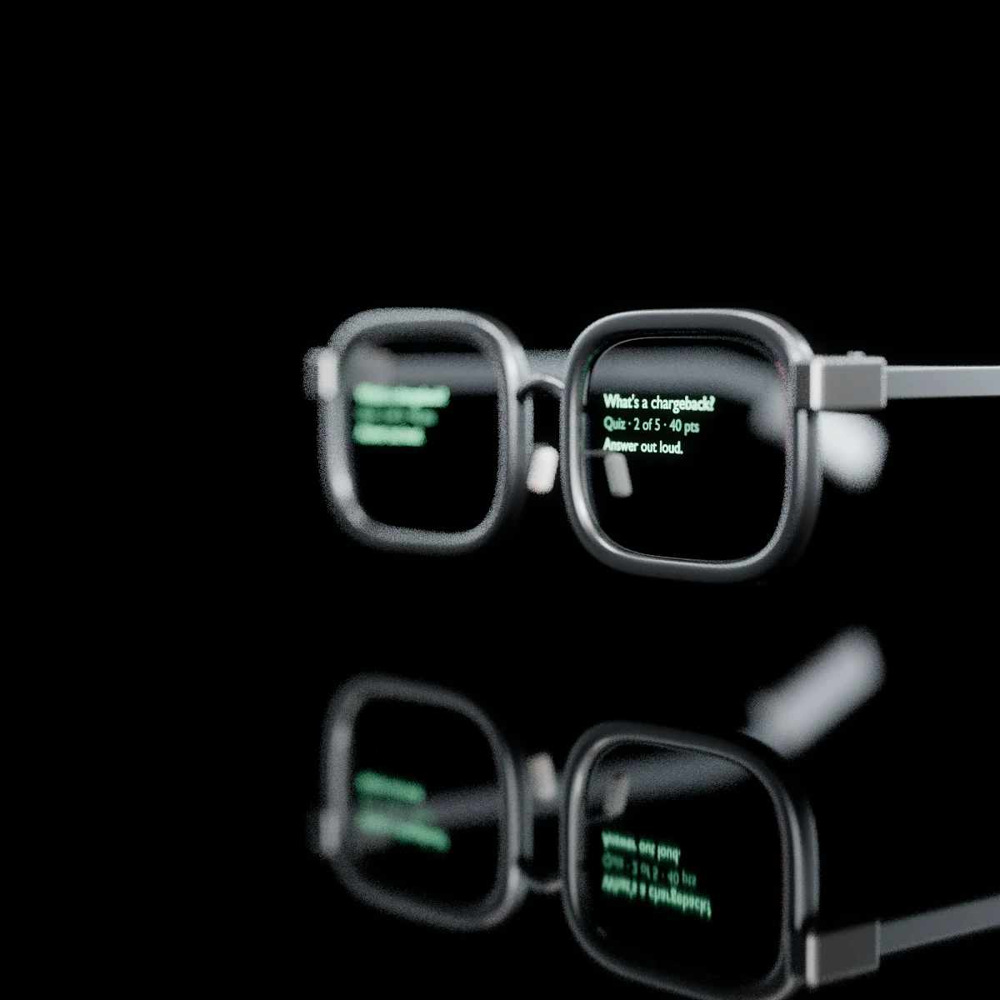

A whole computer in the lens. Claude at the keys.
02 / 05
VOX · LINUX · PODCAST · LEARN
Forget nothing.
Learn anything.
Build anywhere.

Remembers what you hear. Keeps it on your phone.
“Where did I park this morning?”
Level 3, row F, by the lift. You said it at 9:41.
A whole computer in the lens. Claude at the keys.
~/site $ claude> make the cards flip● Reading hx.js● Editing 2 files✓ Done. Have a look.~/site $

Any subject. Two voices. Your level.

A lesson in your ear. A quiz you answer out loud.
What’s a chargeback?
THE BOOK THAT UPDATES ITSELF
“The last page isn’t written yet.”
Every card is wired to the frontier. Today’s best model is tomorrow’s baseline.